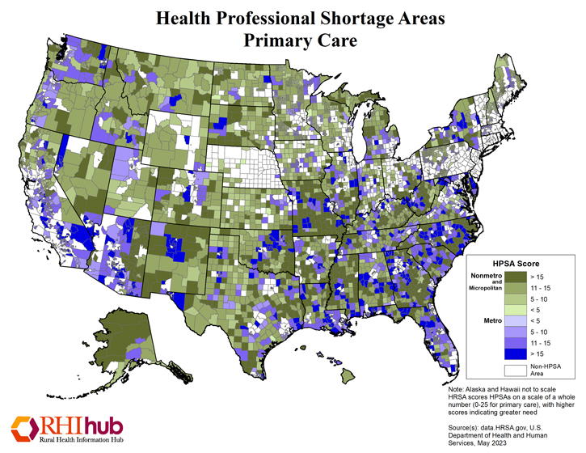
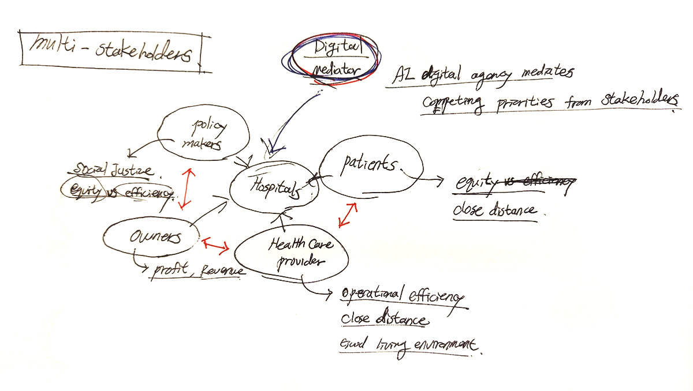
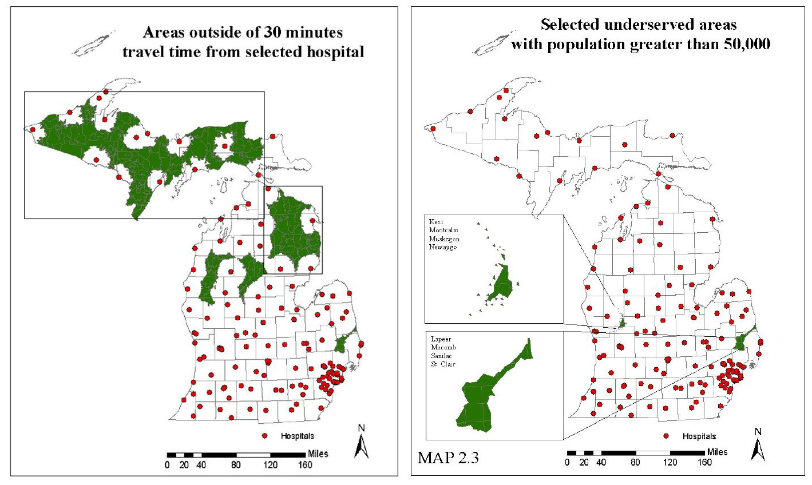
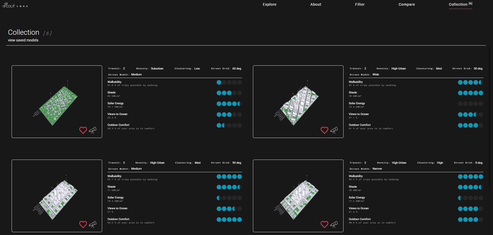
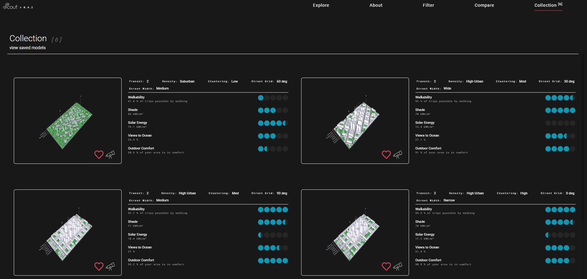
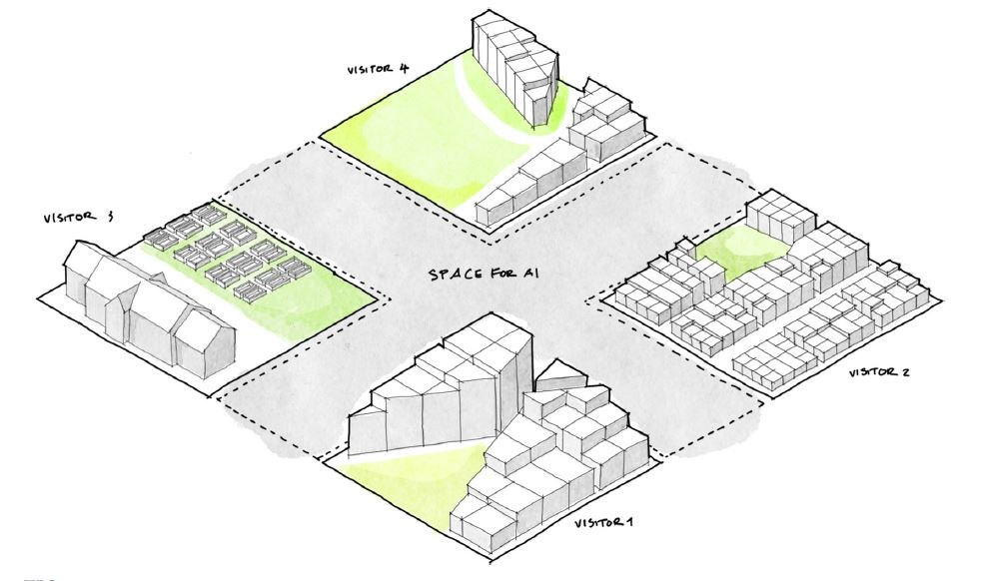
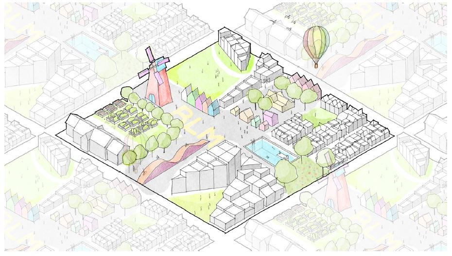

Equitable Identification of Healthcare Sites & Typologies
Inequalities in Access to Health Services in America
Largely there are geographic and economic factors that cause
inequalities in access to health services throughout the United
states. First, residents in rural areas often experience barriers to
health services due to travel distances and medical workforce
shortages. As of September 2022, 65.6% of Primary Care Health
Professional Shortage Areas were located in rural areas. Second,
lower-income Americans are less likely to have health insurance
coverage and therefore lose the chance to prevent serious diseases.
The rate of avoidable hospital conditions(AHC), hospitalization
avoidable through timely and quality primary and preventive care, is
particularly high with lower-income minorities.
So how do I avoid these systematic inequalities in creating
hospital sites selection tools?

Inequalities in the current demand estimate model for health services
The current model to estimate demand for health services has an
inequality issue. HRSA (Health Resources & Services Administration)
runs The Health Workforce Simulation Model(HWSM) to estimate the
current and the future demand for health care. Projections of demand
from HWSM inform policies to provide adequate supply of health care
workers at the national, state, and local levels. The problem is that
the current estimate model heavily relies on medical insurance data
and leaves out the uninsured and vulnerable population. As you can see
from the image below, only 49% of the population is under
employer-based insurance and nearly 40% of the population is either
enrolled in medicaid/medicare or uninsured.
My hypothesis is that this 40% vulnerable population(red) is getting
less geographic access to healthcare services than the
employer-based and direct-purchase insured population(blue).

New Audiences in Reduced Barrier Scenario
With recent initiatives such as Healthy People 2030 by the US
government, national and state goals are to remove barriers that
contribute to inequities in use of health services. This will greatly
affect medical demand estimates from the Medical Expenditure Panel
Survey(MEPS) data.
The equitable hospital site identification research will include
the vulnerables such as uninsured patients and medicaid recipients
based on the new demand from reduced barrier scenario.

Conventional Datasets for healthcare business
Healthcare business owners, developers, and professionals first consider
feasibility, profitability, and operational efficiency when selecting a
site for healthcare. Most of the existing hospitals have been located after
thorough consideration of the categories below.
- Affordability: real estate costs can vary greatly depending on location including costs to develop particular sites based on existing infrastructure. Opportunities to repurpose existing infrastructure to accommodate new healthcare facilities can make the project affordable.
- Demographics & Population Density: factors such as population’s age, income, insurance coverage, overall health status, and population density largely affect profitability.
- Zoning & land use: ensure that the zoning and land use laws allow healthcare business in the proposed location.
- Accessibility: convenient access to healthcare facilities is crucial, whether through personal transportation, or public transit.
Datasets for the Vulnerable Population (equitable healthcare)
Based on the combined datasets below, I will try to answer my hypothesis that vulnerable people in the US are left out in the current healthcare systems. Then, I will pinpoint those areas where vulnerable populations have limited geographic access to healthcare services. Those places will be used for ideal locations for the future hospitals to reduce the current inequalities in access to healthcare services.
-
Social Vulnerability Index (SVI): Centers for Disease Control and Prevention(CDC) provides SVI index based on 16 U.S. census variables(age, race, employment, education, etc) to help local officials identify communities that may need support before, during, or after disasters.
-
Medicaid / Medicare Enrollment: Medicaid provides free health insurance for low-income adults and children. The enrollment eligibility depends on income, disability, and employment status.
-
Uninsured Population: CDC in collaboration with Robert Wood Johnson Foundation provides ‘PLACES: Local Data for Better Health’ data which include uninsured population measurement at the scale of counties and Census tracts.
-
Potentially preventable hospitalization(PPH): inpatient stays that evidence suggests may be avoidable through timely and quality primary and preventive care. The rate of hospital discharges for PPH is high among the vulnerable populations.
-
American Time Use Survey: one’s daily routines show difference in time spent on healthcare service between rural and urban areas.

-
Hospital Distribution: the current distribution of hospitals in the United States.

-
Primary Care Physicians Distribution: The number of primary care physicians per 10,000 residents.

How Computational Relationships Manifest
In my capstone project, the digital agency will compute input data such as existing hospital locations, SVI, public transportations, and travel time to filter and narrow down sites for equitable future healthcare. The digital tool will function like a survey, equipped with spatial data and maps, to collect site options at scale from multiple stakeholders. Then it will process and analyze collected site options from the survey and give insights on what criteria each stakeholder values the most. The digital agency is not only for down selecting optimal sites for individuals but also for managing and mediating competing priorities to draw an optimal site from consensus.
-
Down Selection Process

-
Mediate Multiple Stakeholders

-
Propositions for Healthcare Typologies

Precedent Works
1. The Department of Geography at Michigan State University has done
research on the hospital site selection process for the state of
Michigan. As many medical studies suggest that the 30 minutes
threshold is critical for the survival of patients, the research
concentrated on identifying populations with long drive times to
existing community hospitals. Areas falling outside of the 30 minutes
threshold are identified as limited access areas, which now inform
state policy in evaluation of new local hospital proposals. The
research points out geographic inequality in access to health
services, but it does not mention low-income groups without health
insurance and racial or ethnic minorities.

2. Scout from KPF UI empowers clients or community members to engage in design decision making processes. stakeholders including community members are able to contribute their voice to the design phase with Scout. I want to know how Scout helps a design team to collect, analyze, and present design ideas from many stakeholders. And what process a design team has to go through, equipped with Scout, to narrow down multiple design options and distill one collective design? What is the role of the digital agency(Scout) in mediating conflicting priorities from multiple stakeholders?
 

3. KPF Urban Interface team developed a design paradigm that relied on multivalent collaboration, where AI acted in the role of the spatial negotiagor

